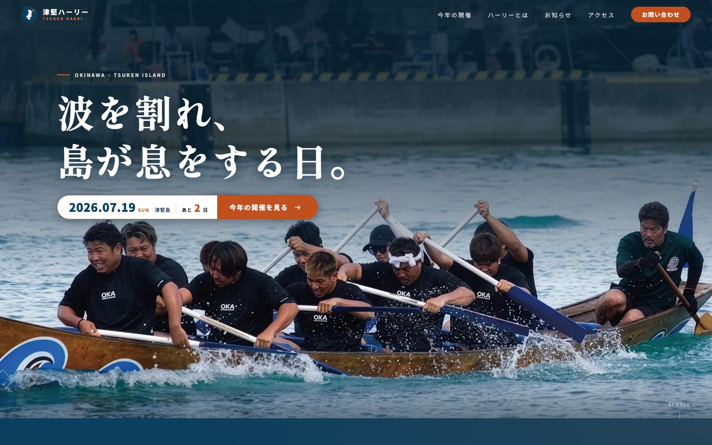

Works — Event Site（実案件）
津堅ハーリーイベント公式サイト
沖縄県うるま市・津堅島の伝統行事「津堅ハーリー」の公式サイト。それまで独自の情報発信の場がなかった島の海神祭に、企画・デザイン・実装からアクセス計測までを一人で一貫して担当し、公式サイトとして公開しました。

Purpose制作の目的
津堅ハーリーは、津堅島で毎年開催される伝統の爬竜船競漕（ハーリー）です。歴史ある行事にもかかわらず独自のWebサイトが存在せず、日程やアクセスを調べる手段が限られていました。そこで「当日の告知・集客」「観光案内」「地域ブランディング」の3つを目的に、公式サイトをゼロから企画・制作しました。
構成は競合分析とペルソナ設計から出発しています。県内のハーリー・祭礼サイトを調査し、来場を決める鍵が「日程の確認」と「フェリーでのアクセス」だと整理。ファーストビューに開催日とカウントダウンを置き、開催情報からアクセス（フェリー案内）まで迷わず辿り着ける一本道の構成にしました。
Designデザインの工夫
主役は実際のレース写真です。ファーストビューは水しぶきの上がる接近ショットを全面に敷き、SVGマスクの波形がネイビーのカバーを切り開いて写真が現れるリビール演出を実装しました。見出しは明朝体、本文はゴシック体の二声構造で、伝統行事の格調と情報サイトとしての読みやすさを両立させています。
配色は海と船に由来するネイビーを基調に、祭りの熱を感じさせるコーラルをアクセントとして設計。ギャラリーは白フチカードが左右互い違いに流れる無限横スクロールにし、写真の持つ勢いをそのまま体験できるようにしました。これらの演出はすべてprefers-reduced-motion（動きを減らす設定）に対応しています。
Performance実装とパフォーマンス
アニメーションはtransformとopacityのみで実装し、GPU合成で軽さを担保。フォントはGoogle Fontsを読み込まず、woff2をサイトと同じサーバーから自前配信する構成に切り替え、さらに大きなフォントCSSは事前圧縮して配信することで、スマートフォンでの初回表示を大幅に改善しました。
公開後はGA4とSearch Consoleを設定し、サイトマップ送信・OGP検証までをチェックリスト化して運用しています。画像のWebP変換やビルドもスクリプト化し、静的サイトならではの表示の速さと更新のしやすさを両立させた、小さなイベントサイトに見合った構成です。
AI WorkflowAIとの協働プロセス
競合分析・構成案・原稿の下書きからコーディング、パフォーマンス改善の検証まで、各工程でAIを活用しています。一方で、開催日や船便といった事実情報の裏取り、掲載可否の判断、写真の選定とトーンの決定は人間の仕事として明確に分け、公式サイトに求められる正確さを担保しました。
その結果、企画から公開・運用設計までを一人で完結させています。「AIは選択肢と速度を、人は判断と一貫性を」という分業は、同じくAI協働で制作した株式会社ライトディレクションのサイトで得た知見を実案件で発展させたものです。
この作品の制作意図や工夫について、詳しくお話しできます。お気軽にご連絡ください。
お問い合わせ